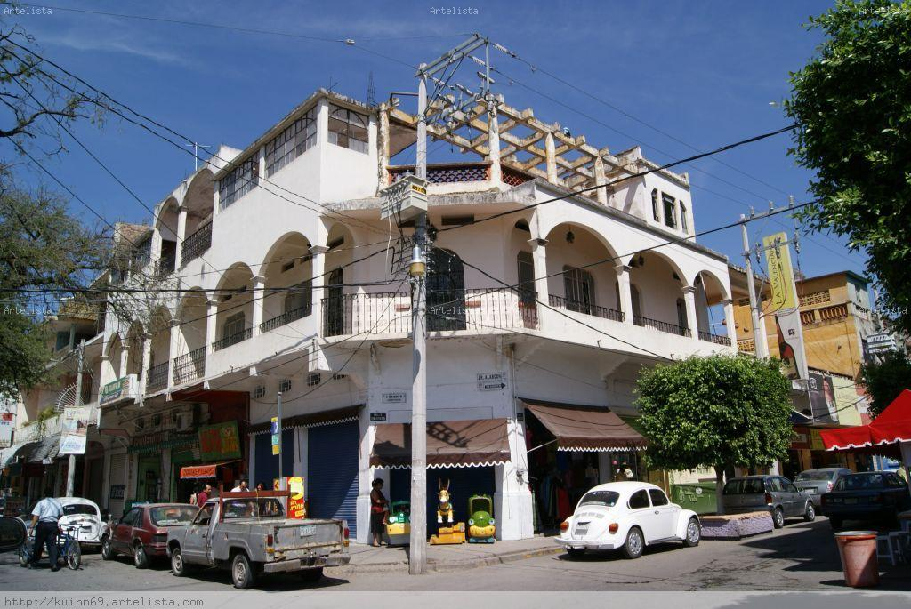

Mediante la llave encontrada anteriormente y las direcciones anotadas en "Persuasión" hemos llegado a esta casa:
En el centro de Iguala, hay una vieja casona de fachada blanca y techo de teja rojiza que está semioculta por varios puestos callejeros. Adosada a uno de los muros y detrás de mantas y ropas colgando, hay una placa metálica con el nombre de la escritora grabado, que dice: «Durante su adolescencia habitó en esta casa de donde surgieron las ideas para escribir su magna obra, Los recuerdos del porvenir, en la cual describe la vida de Iguala en este tiempo»
¿Quíen es esta mujer?
.